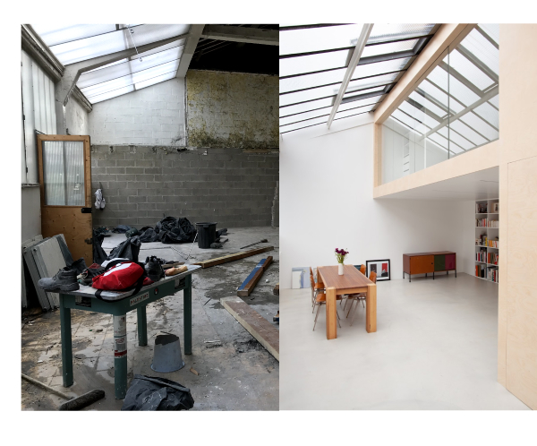
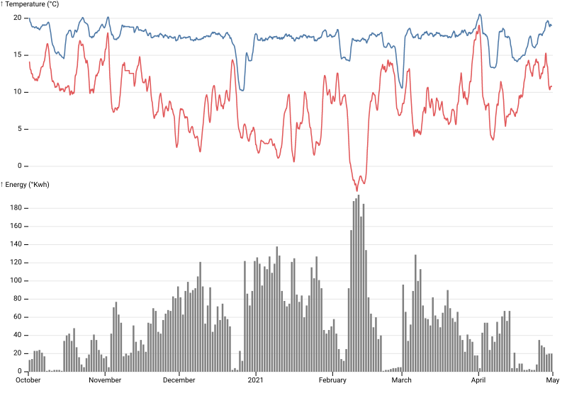
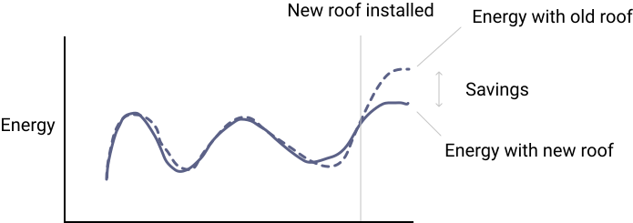

How I changed my roof and cut 1.5 tons of CO2e
Factory
In 2018, my wife and I bought an old shoe factory in Paris.
We entirely demolished and revamped the space.

We were conscious of the importance of energy insulation. We used
hemp-based insulation for walls and a double-glass window
for the facade.
One thing we did not replace was the roof. We loved the industrial-style
"verrière" and it was an expensive thing to do.
Roof
But soon after, we realized it was a bad decision. Insulating the entire flat except the roof
led to severe
thermal bridging.
During winter, as exterior temperature fell, the glass roof was exposed to cold air from the outside and
hot air from the inside leading to condensation.
In July 2021 we finally were able to replace our old single-glass roof. After one year looking for a capable
artisan, we installed a double
glass ceiling roof with thermal break steel from
Jansen. The
difference in confort was mind boggling. It was like moving in a new flat.
Data
A question I asked myself was: how much energy and CO2 are we saving?
In February 2019, I acquired a
Netatmo thermostat
that controls the heating system. The device collects temperature, boiler activity on a 30min step.
It has an
API we can query. See code
source in
Python here.
In July 2020, I also got installed
Gazpar, the smart
gas meter from GRDF (French gas operator). While far from perfect (the data portal is
often down) it allows me to get
an accurate daily measure of my energy consumption.
Below is a line graph plotting
internal temperature,
exterior
temperature (°C)
and
energy in Kwh
between October 2020 and April 2021. Few notes:
- It's pretty chilly in our flat! Average interior temperature is 17.2 °C.
- The colder outside the more energy we consume (duh).

Modeling
In order to measure how much energy we are saving, we need a model. We could for instance compare
our energy usage with the previous year. But since exterior temperature varies, we be away for the house,
comparing with the previous year is imprecise.
A good model would be like a "twin" flat. It would show how much energy we would have consumed if we had kept the
old roof.

To do so I run a good ol'
linear regression
with the following inputs:
- Internal temperature (°C)
- Exterior temperature (°C)
- Whether or not the flat is occupied (boolean)
The model is trained from October 2020 to February 2021 and has a nice fit! We are able to capture 90% of the
daily energy variance. The graph below displays the
model's predictions
(dotted
line) and the
true energy consumed (solid line). Notice that
the model "holds well" after the training period.
We can also look at the coefficients returned by our model in the table below.
|
coef |
std err |
t |
P>|t| |
[0.025 |
0.975] |
| Intercept |
-8.5130 |
16.689 |
-0.510 |
0.611 |
-41.528 |
24.502 |
| occupied[T.1] |
9.7810 |
4.453 |
2.196 |
0.030 |
0.971 |
18.591 |
| temperature |
8.3755 |
1.179 |
7.105 |
0.000 |
6.044 |
10.707 |
| temperature_ext |
-10.0999 |
0.366 |
-27.614 |
0.000 |
-10.823 |
-9.376 |
The interior and exterior temperature coefficients make sense and can be interpreted as follow:
- Increasing internal temperature by 1°C correlates with a 8Kwh
increase in energy heat.
- Similarly, when external temperature drop by 1°C, we need 10Kwh of energy to heat the home.
If you need some order of magnitude: 10Kwh of energy is equivalent to roughly
13 cyclists pedaling non stop during 8 hours.
Savings
So how much are we saving? The graph below displays our forecast and actuals after the new roof was installed.
See the difference between the two lines? That's how much we are saving.
Another way to represent is whether we are
above or
below the forecast on a given day (thank
you
Observable
team for the inspiration). On average we are saving 20kwh of daily heating energy or a 35% reduction in energy
usage.
Since Oct 01, 2021 we have saved 2,300 kwh, equivalent to 720 kg CO2e (assuming a
0.3g of CO2e per Kwh of heating gas). At current
trend, we would save 5,200 kwh, equivalent to 1,600 kg CO2e until Apr 15, 2022. To put that number in
perspective, a French emits about 9,000 kg of CO2e per year. Not bad for a roof.
Next
If you liked that post and would like to replicate it for your home, you can find my code on
Github. I am also happy to help, reach out on Twitter
at
@martindaniel4.
Lastly, if you like coding, data and
cutting carbon, I am hiring at my startup
Carbonfact.